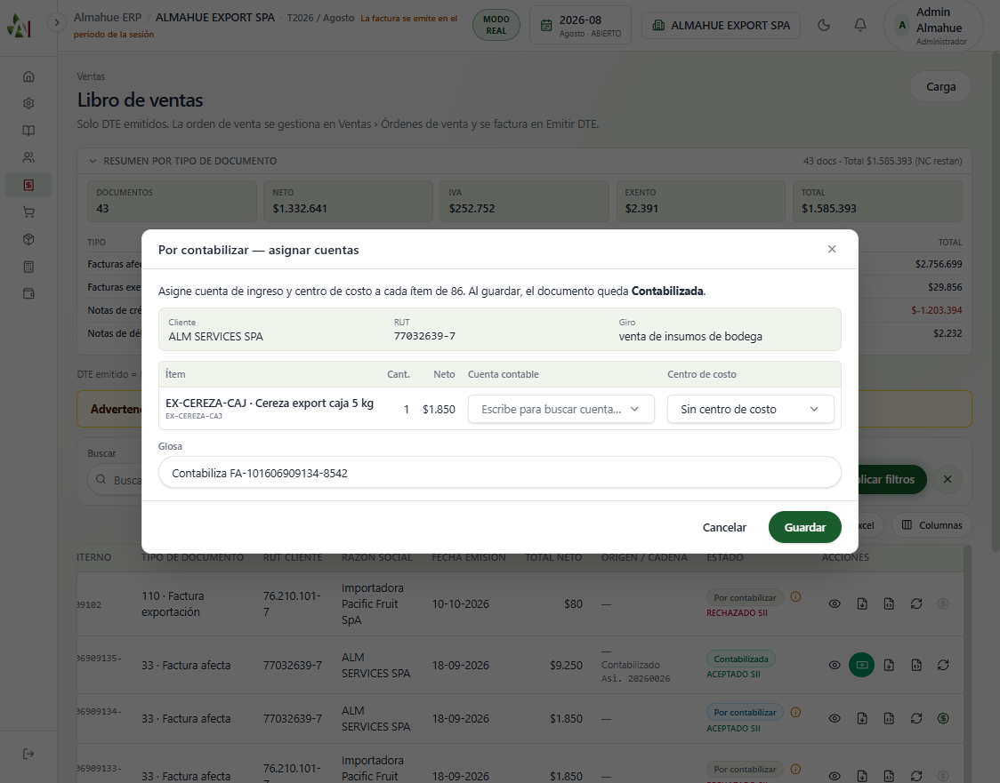
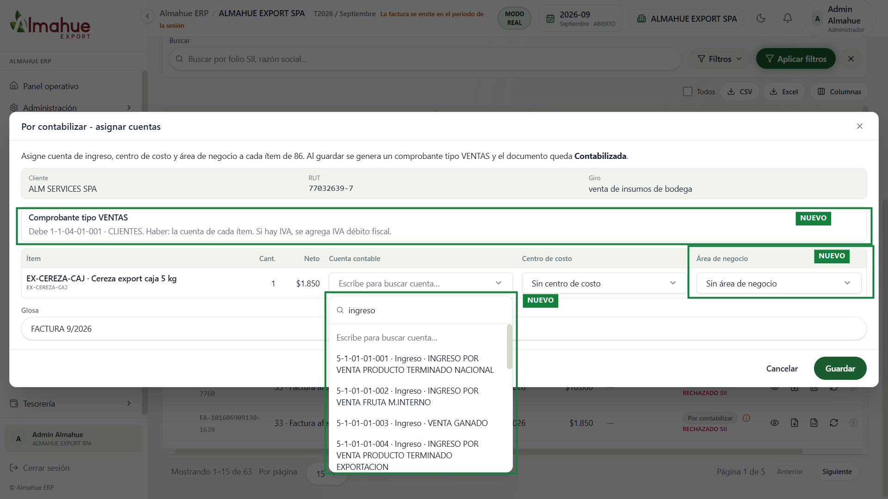

Volver al inicio · Recorrido de este cambio
Misma factura 86 del libro de ventas (ALM SERVICES, $1.850, 18/09/2026), antes y después del ajuste. El documento ya traía cliente, neto, IVA, fecha y líneas. El asiento no usaba parte de eso.
Base: comprobante 4969 de María Jesús, plan de cuentas que ella entregó, y Reu2/Reu4 (cuenta y centro de costo por ítem, clientes de exportación aparte de clientes nacionales).


Antes, el modal solo pedía cuenta y centro de costo, y la glosa repetía el folio. Después, el desplegable de la cuenta queda abierto y el nombre largo se lee apilado a la derecha del ítem. También entran el área de negocio, la glosa FACTURA 9/2026 y el aviso del comprobante tipo VENTAS. El recuadro verde y la etiqueta NUEVO están solo en la captura. No se guardó el asiento.
| Dato | Antes | Después |
|---|---|---|
| Tipo de comprobante | MANUAL | VENTAS |
| Glosa | Contabiliza FA-101606909134-8542 | FACTURA 9/2026. Si el documento trae tipo de cambio, se agrega TC: valor. |
| Debe | La cuenta CLIENTES de Config SII, o la primera cuenta imputable | 1-1-04-01-001 CLIENTES. Si la venta es exportación, 1-1-04-01-002 CLIENTES EXPORTACION. |
| Haber | Cuenta y centro de costo del ítem. El centro podía quedar vacío. | Igual, más área de negocio. Si la cuenta del plan exige centro o área, Guardar no sigue sin ellos. |
| IVA | Se agregaba si el documento tenía IVA | Sigue igual. Esta factura es afecta, así que el aviso lo dice. Una exportación sin IVA no lleva esa línea. |
| Vencimiento y dólares | El documento los podía tener y el asiento los ignoraba | Si el documento tiene vencimiento, va en la línea del cliente. Si tiene monto en otra moneda y tipo de cambio, van en cada línea. Esta factura 33 no los trae, por eso el aviso no los muestra. |
No se contabilizó la factura 86. La captura de después es el modal listo para guardar. Las pruebas del servicio comercial (43) pasan.
En el comprobante 4969 la línea del cliente trae un 111 y un 1494. La glosa dice FACTURA y 111 en el SII es nota de crédito de exportación. No hay de dónde copiar ese par, así que el asiento no lo inventa.